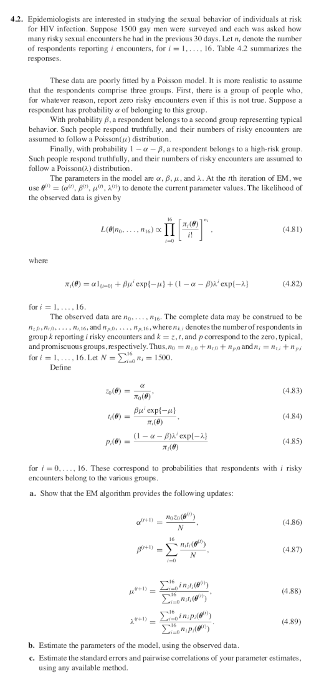

Computational Statistics - SIUe - STAT 575 - Problem Set 2
By Alex Towell (lex@metafunctor.com)
Problem 1
Derive the E-M algorithm for right-censored normal data with known variance, say $2 = 1$. Consider $Y_i$’s that are i.i.d. from a $N(\theta, 1)$, $i=1,2\ldots, n$. We observe $(x_1, \ldots, x_n)$ and $(\delta_1, \ldots, \delta_n)$, where $x_i = \min(y_i,c)$, and $\delta_i = I(y_i < c)$. Let $C$ be the total number of censored (incomplete) observations. We denote the missing data as ${Z_i : \delta_i = 0}$.
Part (a)
Derive the complete log-likelihood, $\ell(\theta | Y)$.
Solution
$$ Y_i \sim f_{Y_i}(y | \theta) $$$$ f_{Y_i}(y | \theta) = (2 \pi)^{-\frac{1}{2}} \exp\left(-\frac{1}{2}(y - \theta)^2\right). $$$$ \begin{align*} L(\theta | \{y_i\}) &= \prod_{i=1}^{n} (2 \pi)^{-\frac{1}{2}} \exp\left(-\frac{1}{2}(y_i - \theta)^2\right)\\ &= (2 \pi)^{-\frac{n}{2}} \exp\left(-\sum_{i=1}^{n} \frac{1}{2}(y_i - \theta)^2\right). \end{align*} $$$$ \begin{align*} \ell(\theta | \{y_i\}) &= \log L(\theta | \{y_i\})\\ &= -\frac{n}{2} \log (2 \pi) - \frac{1}{2} \sum_{i=1}^{n} (y_i - \theta)^2\\ &= -\frac{n}{2} \log (2 \pi) - \frac{1}{2} \sum_{i=1}^{n} y_i^2 + \theta \sum_{i=1}^{n} y_i - \frac{n}{2} \theta^2. \end{align*} $$$$ \ell(\theta | \{y_i\}) = k + \theta \sum_{i=1}^{n} y_i - \frac{n}{2} \theta^2. $$Part (b)
$$ E(Y | x, \delta=1, \theta^{(t)}) = x $$$$ E(Y | x, \delta=0, \theta^{(t)}) = E(Y | Y > x) = \theta^{(t)} + \frac{\phi(x-\mu)}{1 - \Phi(x-\mu)} $$where $\phi$ and $\Phi$ are pdf and cdf of standard normal.
Solution
The distribution of $Y$ given $\delta = 1$, is uncensored and therefore it is given that $Y$ realized the value $x$. Since the expectation of a constant $x$ is $x$, that means $E(Y | Y = x) = x$.
If $\delta = 0$, $Y$ is censored, i.e., $Y > x$. To take its expectation, we first need to derive the conditional conditional distribution of $Y$ given $Y > x$ and $\theta^{(t)}$.
$$ \Pr(Y \leq y | Y > x) = \Pr(x < Y \leq y) / \Pr(Y > x) $$$$ \Pr(Y \leq y | Y > x) = \frac{F_Y(y | \theta^{(t)}) - F_Y(x | \theta^{(t)})}{1 - F_Y(y | \theta^{(t)})}. $$where $F_{Y|\theta^{(t)}}$ is the cdf of the normal distribution with $\sigma=1$ and $\mu=\theta^{(t)}$.
$$ F_{Y}(y|\theta^{(t)}) = \Phi(y - \theta^{(t)}), $$$$ \Pr(Y \leq y | Y > x) = \frac{\Phi(y - \theta^{(t)}) - \Phi(x - \theta^{(t)})}{1 - \Phi(x - \theta^{(t)})} $$$$ F_{Y|x}(y|\theta^{(t)}) = 1 - \frac{1- \Phi(y - \theta^{(t)})}{1 - \Phi(x - \theta^{(t)})} $$$$ f_{Y}(y|x,\theta^{(t)}) = \frac{\phi(y - \theta^{(t)})}{1 - \Phi(x - \theta^{(t)})} I(y > x). $$$$ \begin{align*} E(Y|x,\theta^{(t)}) &= \int_{x}^{\infty} y f_{Y}(y|x,\theta^{(t)}) dy\\ &= \int_{x}^{\infty} y \left(\frac{\phi(y - \theta^{(t)})}{1 - \Phi(x - \theta^{(t)})}\right) dy\\ &= \frac{1}{{1 - \Phi(x - \theta^{(t)})}}\int_{x}^{\infty} y \phi(y - \theta^{(t)}) dy. \end{align*} $$Analytically, this is a tricky integration problem. Certainly, it would be trivial to numerically integrate this to obtain a solution, but we seek a closed-form solution.
I searched online, and discovered an interesting way to tackle this integration problem.
$$ \frac{df}{dy} = -(y - \theta) f(y) $$$$ \int_{a}^{b} \frac{df}{dy} dy = f(b) - f(a). $$$$ \begin{align*} E(Y|x,\theta^{(t)}) &= \frac{1}{1 - F(x)}\int_{x}^{\infty} y f(y) dy\\ &= -\frac{1}{1 - F(x)}\int_{x}^{\infty} - (y -\theta^{(t)}) f(y) dy + \frac{\theta^{(t)}}{1-F(x)}\int_{x}^{\infty} f(y) dy\\ &= -\frac{1}{1 - F(x)}\int_{x}^{\infty} \frac{df}{dy} dy + \frac{\theta^{(t)}}{1-F(x)} (1-F(x))\\ &= -\frac{1}{1 - F(x)}\left(f(\infty) - f(x)\right) + \theta^{(t)}\\ &= \frac{f(x)}{1 - F(x)} + \theta^{(t)}. \end{align*} $$$$ E(Y|x,\theta^{(t)}) = \theta^{(t)} + \frac{\phi(x-\theta^{(t)})}{1 - \Phi(x-\theta^{(t)})}. $$Part (c)
Derive the $E$-step and $M$-step using parts (a) and (b). Give the updating equation.
Solution
E-step
The $E$-step entails taking the conditional expectation of the complete log-likelihood function $\ell(\theta | {Y_i})$ given the observed data ${x_i}$ and ${\delta_i}$.
$$ \begin{align*} Q(\theta | \theta^{(t)}) &= E_{Y_i | x_i,\delta_i}(\ell(\theta | \{Y_i\})\\ &= E_{Y_i | x_i,\delta_i}\left(k + \theta \sum_{i=1}^{n} Y_i - \frac{n}{2} \theta^2\right)\\ &= k - \frac{n}{2}\theta^2 + \theta \sum_{i=1}^{n} E_{Y_i | x_i,\delta_i}(Y_i). \end{align*} $$$$ Q(\theta | \theta^{(t)}) = k - \frac{n}{2}\theta^2 + \theta \sum_{i=1}^{n} \delta_i x_i + (1-\delta_i) \left(\theta^{(t)} + \frac{\phi(x_i-\theta^{(t)})}{1 - \Phi(x_i-\theta^{(t)})}\right). $$$$ Q(\theta | \theta^{(t)}) = k - \frac{n}{2}\theta^2 + C \theta \theta^{(t)} + R \theta + \theta \sum_{i=1}^{n} \frac{(1-\delta_i)\phi(x_i-\theta^{(t)})}{1 - \Phi(x_i-\theta^{(t)})}. $$M-step
$$ \theta^{(t+1)} = \arg\max_{\theta} Q(\theta | \theta^{(t)}). $$$$ \frac{d Q(\theta | \theta^{(t)})}{d \theta}\Biggr|_{\theta=\theta^{(t+1)}} = 0, $$$$ -n\theta^{(t+1)} + C \theta^{(t)} + R + \sum_{i=1}^{n} \frac{(1-\delta_i)\phi(x_i-\theta^{(t)})}{1 - \Phi(x_i-\theta^{(t)})} = 0. $$$$ \theta^{(t+1)} = \frac{R}{n} + \frac{C}{n} \theta^{(t)} + \frac{1}{n}\sum_{i=1}^{n}\frac{(1-\delta_i)\phi(x_i-\theta^{(t)})}{1 - \Phi(x_i-\theta^{(t)})}. $$$$ R = \sum_{i=1}^{n} \delta_i x_i $$$$ C = \sum_{i=1}^{n} (1-\delta_i). $$Part (d)
Use your algorithm on the V.A. data to find the MLE of $\mu$. Take the log of the event times first and standardize by sample standard deviation. You may simply use the censored data sample mean as your starting value.
Solution
In the following R code, we implement the updating equation derived in the previous step. We encapulsate the procedure into a function that takes its arguments in the form of a censored set, uncensorted set, starting value ($\theta^{(1)}$), and an $\epsilon$ value to control stopping condition.
# assuming the uncensored and censored data are distributed normally,
# we use the EM algorithm to derive an estimator given censored and uncensored
# data.
mean_normal_censored_estimator_em <- function(uncensored,censored,theta,eps=1e-6,debug=T)
{
dev <- sd(log(c(uncensored,censored)))
censored <- log(censored) / dev
uncensored <- log(uncensored) / dev
theta <- log(theta) / dev
n <- length(censored) + length(uncensored)
C <- length(censored)
R <- sum(uncensored)
s <- function(theta)
{
sum <- 0
for (i in 1:C)
{
num <- dnorm(censored[i],mean=theta,sd=1)
denom <- 1-pnorm(censored[i],mean=theta,sd=1)
sum <- sum + (num / denom)
}
sum
}
i <- 1
repeat
{
theta.new <- R/n + C/n * theta + (1/n)*s(theta)
if (debug==T) { cat("theta[", i, "] =",theta,", theta[", i+1, "] =",theta.new,"\n") }
if (abs(theta.new - theta) < eps)
{
theta <- theta.new * dev
theta <- exp(theta)
return(theta)
}
i <- i + 1
theta <- theta.new
}
}
We apply this procedure to the indicated data set.
library(MASS) # has VA data
VAs <- subset(VA,prior==0)
censored <- VAs$status == 0
censored_xs <- VAs[censored,c("stime")]
uncensored_xs <- VAs[!censored,c("stime")]
mu <- mean(uncensored_xs)
cat("mean of the uncensored sample is ", mu, ".")
## mean of the uncensored sample is 112.1648 .
sol <- mean_normal_censored_estimator_em(uncensored_xs,censored_xs,mu)
## theta[ 1 ] = 3.857928 , theta[ 2 ] = 3.424258
## theta[ 2 ] = 3.424258 , theta[ 3 ] = 3.415443
## theta[ 3 ] = 3.415443 , theta[ 4 ] = 3.415286
## theta[ 4 ] = 3.415286 , theta[ 5 ] = 3.415283
## theta[ 5 ] = 3.415283 , theta[ 6 ] = 3.415283
sol
## [1] 65.2625
We see that our estimate of $\theta$ is $\hat{\theta} = 65.2624985$. (The $\theta$ before transforming it to the appropriate scale was $3.415283$.)
This mean is somewhat lower than anticipated, which makes me suspect something is wrong with my updating equation. If I have the time, I will revisit it.
Problem 2

Solution
Part (a)
There are $N=1500$ gay men in the survey sample where $X_i$ denotes the $i$-th persons response to the number of risky sexual encounters he had in the previous $30$ days. Thus, we observe a sample $\vec{X} = (X_1,X_2,\ldots, X_N)$.
We assume there are $3$ groups in the population, denoted by $z=1$, $t=2$, and $p=3$. Group $1$ members report $0$ risky sexual encounters regardless of the truth where the probability of being a member of group $1$ is denoted by $\alpha$,
Group $2$ members accurately report risky sexual encounters and represent typical behavior where the probability of being a member of group $2$ is denoted by $\beta$. We assume this group’s number of sexual encounters follows a poisson with mean $\mu$.
Group $3$ members accurately report risky sexual encounters and represent high-risk behavior where the probability of being a member of group $3$ is $\gamma = 1-\alpha-\beta$. We assume this group’s number of sexual encounters follows a poisson with mean $\lambda$.
$$ X_i \sim f(x | \vec{\theta}) = \alpha I(x=0) + \beta \mathrm{Poi}(x | \mu) + (1-\alpha-\beta)\mathrm{Poi}(x | \lambda) $$$$ \vec{\theta} = (\alpha,\beta,\mu,\lambda)'. $$$$ \begin{align*} X_i | Z_i &= 1 \sim I(x=0),\\ X_i | Z_i &= 2 \sim \mathrm{Poi}(\mu),\\ X_i | Z_i &= 3 \sim \mathrm{Poi}(\lambda), \end{align*} $$$$ Z_i \sim f_{Z_i}(z_i | \vec{\theta}) = \Pr(Z_i=z_i) = \begin{cases} \alpha & z_i = 1,\\ \beta & z_i = 2,\\ \gamma=1-\alpha-\beta & z_i = 3, \end{cases} $$$$ f_{X_i,Z_i}(x_i,z_i | \vec{\theta}) = \alpha I(z_i = 1) + \beta \mathrm{Poi}(\mu) I(z_i = 2) + (1-\alpha-\beta) \mathrm{Poi}(\lambda) I(z_i=3). $$$$ \mathcal{L}(\vec{\theta} | \vec{X}, \vec{Z}) = \prod_{i=1}^{N} f_{X_i,Z_i}(x_i,z_i | \vec{\theta}), $$$$ \mathcal{L}(\vec{\theta} | \vec{X}, \vec{Z}) = \left(\prod_{\{i | z_i = 1\}} \alpha I(x_i=0)\right) \left(\prod_{\{i | z_i = 2\}} \beta \frac{\mu^{x_i} e^{-\mu}}{x_i!}\right) \left(\prod_{\{i | z_i = 3\}} \gamma \frac{\lambda^{x_i} e^{-\lambda}}{x_i!}\right). $$$$ \mathcal{L}(\vec{\theta} | \vec{X}, \vec{Z}) = \left(\prod_{\{i | z_i = 1, x_i = 0 \}} \alpha\right) \prod_{k=0}^{16} \left(\prod_{\{i | z_i = 2, x_i = k\}} \beta \frac{\mu^{k} e^{-\mu}}{k!}\right) \prod_{k=0}^{16} \left(\prod_{\{i | z_i = 3, x_i = k\}} \gamma \frac{\lambda^{k} e^{-\lambda}}{k!}\right). $$$$ \mathcal{L}(\vec{\theta} | \{n_{j,k}\}) = \alpha^{n_{1,0}} \prod_{k=0}^{16} \beta^{n_{2,k}} \frac{\mu^{k n_{2,k}} e^{-\mu n_{2,k}}}{(k!)^{n_{2,k}}} \prod_{k=0}^{16} \gamma^{n_{3,k}} \frac{\lambda^{k n_{3,k}} e^{-\lambda n_{3,k}}}{(k!)^{n_{3,k}}} $$$$ \ell(\vec{\theta} | \{n_{j,k}\}) = n_{1,0} \log \alpha + \sum_{k=0}^{16} \log \left(\beta^{n_{2,k}} \frac{\mu^{k n_{2,k}} e^{-\mu n_{2,k}}}{(k!)^{n_{2,k}}}\right) + \sum_{k=0}^{16} \log \left(\gamma^{n_{3,k}} \frac{\lambda^{k n_{3,k}} e^{-\lambda n_{3,k}}}{(k!)^{n_{3,k}}}\right) $$$$ \begin{split} \ell(\vec{\theta} | \{n_{j,k}\}) = n_{1,0} \log \alpha + \sum_{k=0}^{16} &n_{2,k}(\log \beta + k \log \mu - \mu - \log k!) + \\ &n_{3,k}(\log \gamma + k \log \lambda - \lambda - \log k!). \end{split} $$$$ \ell(\vec{\theta} | \{n_{j,k}\}) = n_{1,0} \log \alpha + \sum_{k=0}^{16} \left\{ n_{2,k}(\log \beta + k \log \mu - \mu) + n_{3,k}(\log \gamma + k \log \lambda - \lambda) \right\}. $$E-step
$$ Q(\vec{\theta} | \vec{\theta}^{(t)}) = E(\ell(\vec{\theta})) $$$$ Q(\vec{\theta} | \vec{\theta}^{(t)}) = E \left( n_{1,0} \log \alpha + \sum_{k=0}^{16} \left\{ n_{2,k}(\log \beta + k \log \mu - \mu) + n_{3,k}(\log \gamma + k \log \lambda - \lambda) \right\} \right). $$$$ Q(\vec{\theta} | \vec{\theta}^{(t)}) = E(n_{1,0}) \log \alpha + \sum_{k=0}^{16} \left\{ E(n_{2,k})(\log \beta + k \log \mu - \mu) + E(n_{3,k})(\log \gamma + k \log \lambda - \lambda) \right\} $$given ${n_j}$ and $\theta^{(t)}$.
Consider $E!\left(n_{2,k} | {n_j}, \theta^{(t)}\right)$. To solve this expectation, we must first derive the distribution of $n_{2,k}$.
$$ \Pr(Z_j = 2 | x_j = k) = \Pr(Z_j = 2) \Pr(x_j = k | Z_j = 2) / \Pr(x_j = k). $$We note that $\Pr(x_j = k)$ is equivalent to $\pi_k(\vec{\theta})$, $\Pr(Z_j = 2)$ is the definition of $\beta$, and $\Pr(x_j = k | Z_j = 2)$ is $f_{X_j|Z_j}(k | Z_j=2) = \mathrm{Poi}(k | \mu)$.
$$ t_k(\vec{\theta}) = \Pr(Z_j = 2 | x_j = k) = \beta \mathrm{Poi}(k | \mu) / \pi_k(\vec{\theta}). $$$$ E(n_{2,k}) = n_k t_k(\vec{\theta}^{(t)}). $$$$ E(n_{3,k}) = n_k p_k(\vec{\theta}^{(t)}) $$$$ E(n_{1,0}) = n_0 z_0(\vec{\theta}^{(t)}), $$$$ Q(\vec{\theta} | \vec{\theta}^{(t)}) = n_0 z_0(\vec{\theta}^{(t)}) \log \alpha + \sum_{k=0}^{16} \left\{ n_k t_k(\vec{\theta}^{(t)})(\log \beta + k \log \mu - \mu) + n_k p_k(\vec{\theta}^{(t)})(\log \gamma + k \log \lambda - \lambda) \right\} $$M-step
$$ \vec{\theta}^{(t+1)} = \argmax_{\vec{\theta}} Q(\vec{\theta} | \vec{\theta}^{(t)}). $$$$ \nabla Q(\vec{\theta} | \vec{\theta}^{(t)})\Bigr|_{\vec{\theta}=\vec{\theta}^{(t+1)}} = \vec{0}. $$$$ Q_l(\vec{\theta},c | \vec{\theta}^{(t)}) = Q(\vec{\theta} | \vec{\theta}^{(t)}) + c(1-\alpha-\beta-\gamma). $$$$ \frac{\partial Q_l}{\partial \alpha} = \frac{n_0 z_0(\theta^{(t)})}{\alpha} - c = 0, $$$$ \alpha^{(t+1)} = \frac{1}{c} n_0 z_0(\theta^{(t)}). $$$$ \beta^{(t+1)} = \frac{1}{c} \sum_{k=0}^{16} n_k t_k(\theta^{(t)}). $$$$ \gamma^{(t+1)} = \frac{1}{c} \sum_{k=0}^{16} n_k p_k(\theta^{(t)}). $$$$ n_0 z_0(\theta^{(t)}) + \sum_{k=0}^{16} n_k t_k(\theta^{(t)}) + \sum_{k=0}^{16} n_k p_k(\theta^{(t)}) = N. $$$$ \begin{align*} \alpha^{(t+1)} &= \frac{1}{N} n_0 z_0(\theta^{(t)})\\ \beta^{(t+1)} &= \frac{1}{N} \sum_{k=0}^{16} n_k t_k(\theta^{(t)})\\ \gamma^{(t+1)} &= \frac{1}{N} \sum_{k=0}^{16} n_k p_k(\theta^{(t)}). \end{align*} $$$$ \begin{align*} \frac{\partial Q_l}{\partial \mu}\biggr|_{\mu=\mu^{(t+1}} &= 0\\ \sum_{k=0}^{16} n_k t_k(\theta^{(t)})(k/\mu^{(t+1)}-1) &= 0\\ \frac{1}{\mu^{(t+1)}} \sum_{k=0}^{16} n_k t_k(\theta^{(t)}) k &= \sum_{k=0}^{16} n_k t_k(\theta^{(t)})\\ \mu^{(t+1)} &= \frac{\sum_{k=0}^{16} k n_k t_k(\theta^{(t)})}{\sum_{k=0}^{16} n_k t_k(\theta^{(t)})}. \end{align*} $$$$ \lambda^{(t+1)} = \frac{\sum_{k=0}^{16} k n_k p_k(\theta^{(t)})}{\sum_{k=0}^{16} n_k p_k(\theta^{(t)})}. $$Part (b)
Estimate the parameters of the model, using the observed data.
Solution
# we observe n = (n0,n1,...,n16)
ns <- c(379,299,222,145,109,95,73,59,45,30,24,12,4,2,0,1,1)
N <- sum(ns)
# theta := (alpha, beta, mu, lambda)'
# note that there is an implicit parameter gamma s.t.
# alpha + beta + gamma = 1
# the initial value assumes each category z, t, or p
# is equally probable, and so we let
# (alpha^(0),beta^(0)) = (1/3,1/3)
# and mu^(0) and lambda^(0) are just arbitrarily chosen to be 2 and 3,
# with the insight that group 3 is more risky than group 2.
theta <- c(1/3,1/3,2,3)
# theta := (alpha, beta, mu, lambda)
Pi <- function(i,theta)
{
res <- 0
if (i == 0)
res <- theta[1]
res <- res + theta[2] * theta[3]^i * exp(-theta[3])
res <- res + (1 - theta[1] - theta[2]) * theta[4]^i * exp(-theta[4])
res
}
z0 <- function(theta)
{
theta[1] / Pi(0,theta)
}
t <- function(i,theta)
{
theta[2] * theta[3]^i * exp(-theta[3]) / Pi(i,theta)
}
p <- function(i,theta)
{
(1-theta[1] - theta[2]) * theta[4]^i * exp(-theta[4]) / Pi(i,theta)
}
# update algorithm, based on EM algorithm
update <- function(theta,ns)
{
# note: n0 := ns[1] instead of ns[0] since R does not use zero-based indexes
alpha <- ns[1] * z0(theta) / N
beta <- 0
mu_num <- 0
mu_denom <- 0
lam_num <- 0
lam_denom <- 0
for (i in 0:16)
{
ti <- t(i,theta)
pi <- p(i,theta)
beta <- beta + ns[i+1] * ti
mu_num <- mu_num + i * ns[i+1] * ti
mu_denom <- mu_denom + ns[i+1] * ti
lam_num <- lam_num + i * ns[i+1] * pi
lam_denom <- lam_denom + ns[i+1] * pi
}
beta <- beta / N
mu <- mu_num / mu_denom
lam <- lam_num / lam_denom
c(alpha,beta,mu,lam)
}
em <- function(theta,ns,steps=10000,debug=T)
{
for(i in 1:steps)
{
theta = update(theta,ns)
if (debug==T)
{
if (i %% 1000 == 0) { cat("iteration =",i," theta = (",theta,")'\n") }
}
}
theta
}
# solution theta = (alpha, beta, mu, lambda)
sol <- em(theta,ns,10000,T)
## iteration = 1000 theta = ( 0.1221661 0.5625419 1.467475 5.938889 )'
## iteration = 2000 theta = ( 0.1221661 0.5625419 1.467475 5.938889 )'
## iteration = 3000 theta = ( 0.1221661 0.5625419 1.467475 5.938889 )'
## iteration = 4000 theta = ( 0.1221661 0.5625419 1.467475 5.938889 )'
## iteration = 5000 theta = ( 0.1221661 0.5625419 1.467475 5.938889 )'
## iteration = 6000 theta = ( 0.1221661 0.5625419 1.467475 5.938889 )'
## iteration = 7000 theta = ( 0.1221661 0.5625419 1.467475 5.938889 )'
## iteration = 8000 theta = ( 0.1221661 0.5625419 1.467475 5.938889 )'
## iteration = 9000 theta = ( 0.1221661 0.5625419 1.467475 5.938889 )'
## iteration = 10000 theta = ( 0.1221661 0.5625419 1.467475 5.938889 )'
We see that the solution is $0.1221661, 0.5625419, 1.4674746, 5.9388889$.
Part (c)
Estimate the standard errors and pairwise correlations of your parameters, using any available method.
Solution
We have chosen to use the Bootstrap method.
# ns = (379,299,222,145,109,95,73,59,45,30,24,12,4,2,0,1,1)
# 379 responded 0 encounters
# 299 responded 1 encounters
# 222 responded 2 encounters
# ...
# 1 responded 16 encounters
#
# to resample, we resample from the data set that includes each
# persons response, as determined by ns.
data <- NULL
for (i in 1:length(ns))
{
data <- append(data,rep((i-1),ns[i]))
}
make_into_counts <- function(data)
{
ns <- NULL
for (i in 0:16)
{
ni <- data[data == i]
l <-length(ni)
ns <- append(ns,l)
}
ns
}
m <- 1000 # bootstrap replicates
em_steps <- 100
theta.bs <- em(theta,ns,em_steps,F)
thetas <- rbind(theta.bs)
for (i in 2:m)
{
indices <- sample(N,N,replace=T)
resampled <- make_into_counts(data[indices])
theta.bs <- em(theta,resampled,em_steps,F)
thetas <- rbind(thetas,theta.bs)
if (i %% 100 == 0)
{
cat("iteration ", i, "\n")
print(cov(thetas))
}
}
## iteration 100
## [,1] [,2] [,3] [,4]
## [1,] 0.0004197254 -0.0001718468 0.0017266699 0.001591205
## [2,] -0.0001718468 0.0005295261 0.0002895402 0.001980314
## [3,] 0.0017266699 0.0002895402 0.0131179548 0.015108087
## [4,] 0.0015912053 0.0019803141 0.0151080872 0.047009875
## iteration 200
## [,1] [,2] [,3] [,4]
## [1,] 0.0003864557 -1.678292e-04 1.590662e-03 0.00154358
## [2,] -0.0001678292 4.671077e-04 9.764038e-05 0.00133111
## [3,] 0.0015906622 9.764038e-05 1.228480e-02 0.01297749
## [4,] 0.0015435804 1.331110e-03 1.297749e-02 0.03894848
## iteration 300
## [,1] [,2] [,3] [,4]
## [1,] 0.0003735625 -1.785107e-04 1.479671e-03 0.001351610
## [2,] -0.0001785107 4.678372e-04 6.137843e-06 0.001259075
## [3,] 0.0014796708 6.137843e-06 1.123608e-02 0.011748534
## [4,] 0.0013516098 1.259075e-03 1.174853e-02 0.036388361
## iteration 400
## [,1] [,2] [,3] [,4]
## [1,] 0.0003625489 -0.0001755464 0.0014276201 0.001221715
## [2,] -0.0001755464 0.0004540625 0.0000184334 0.001288138
## [3,] 0.0014276201 0.0000184334 0.0110764497 0.010780774
## [4,] 0.0012217155 0.0012881380 0.0107807741 0.034067537
## iteration 500
## [,1] [,2] [,3] [,4]
## [1,] 0.0003718052 -0.0001842823 0.0014502414 0.001310802
## [2,] -0.0001842823 0.0004847405 0.0001080019 0.001398247
## [3,] 0.0014502414 0.0001080019 0.0114792580 0.011828494
## [4,] 0.0013108018 0.0013982467 0.0118284941 0.036489243
## iteration 600
## [,1] [,2] [,3] [,4]
## [1,] 0.0003791435 -1.814512e-04 1.497719e-03 0.001364054
## [2,] -0.0001814512 4.674232e-04 7.293112e-05 0.001410218
## [3,] 0.0014977193 7.293112e-05 1.157800e-02 0.011903853
## [4,] 0.0013640538 1.410218e-03 1.190385e-02 0.037292937
## iteration 700
## [,1] [,2] [,3] [,4]
## [1,] 0.0003819013 -1.782221e-04 1.521678e-03 0.001410964
## [2,] -0.0001782221 4.546723e-04 8.545081e-05 0.001405131
## [3,] 0.0015216781 8.545081e-05 1.178236e-02 0.012322621
## [4,] 0.0014109640 1.405131e-03 1.232262e-02 0.037738946
## iteration 800
## [,1] [,2] [,3] [,4]
## [1,] 0.0003730646 -0.0001676221 0.0015068905 0.001443218
## [2,] -0.0001676221 0.0004405397 0.0001354924 0.001470624
## [3,] 0.0015068905 0.0001354924 0.0118808619 0.012889971
## [4,] 0.0014432180 0.0014706239 0.0128899710 0.038858338
## iteration 900
## [,1] [,2] [,3] [,4]
## [1,] 0.0003676784 -0.0001699529 0.0014571801 0.001358486
## [2,] -0.0001699529 0.0004554077 0.0001823193 0.001590474
## [3,] 0.0014571801 0.0001823193 0.0117524614 0.012790632
## [4,] 0.0013584862 0.0015904740 0.0127906324 0.039055305
## iteration 1000
## [,1] [,2] [,3] [,4]
## [1,] 0.0003697739 -0.0001652985 0.0014912066 0.001367237
## [2,] -0.0001652985 0.0004523873 0.0002111503 0.001638727
## [3,] 0.0014912066 0.0002111503 0.0120934727 0.013311533
## [4,] 0.0013672372 0.0016387267 0.0133115328 0.039376614
cov.bs <- cov(thetas)
cor.bs <- cor(thetas)
The Bootstrap estimator of the covariance matrix is given by
## [,1] [,2] [,3] [,4]
## [1,] 0.0003697739 -0.0001652985 0.0014912066 0.001367237
## [2,] -0.0001652985 0.0004523873 0.0002111503 0.001638727
## [3,] 0.0014912066 0.0002111503 0.0120934727 0.013311533
## [4,] 0.0013672372 0.0016387267 0.0133115328 0.039376614
and the correlation matrix is given by
## [,1] [,2] [,3] [,4]
## [1,] 1.0000000 -0.40415269 0.70517057 0.3583080
## [2,] -0.4041527 1.00000000 0.09027364 0.3882685
## [3,] 0.7051706 0.09027364 1.00000000 0.6100050
## [4,] 0.3583080 0.38826847 0.61000496 1.0000000
Let’s try using the Hessian of the observed information matrix.
library(numDeriv)
loglike <- function(theta)
{
s <- 0
for (x in data)
{
s <- s + log(theta[1]*as.numeric(x==0) +
theta[2]*dpois(x,theta[3]) +
(1-theta[1]-theta[2])*dpois(x,theta[4]))
}
s
}
mle <- c(0.1221661,0.5625419,1.4674746,5.9388889)
solve(-hessian(loglike,mle))
## [,1] [,2] [,3] [,4]
## [1,] 0.0003799048 -1.909698e-04 1.438556e-03 0.001184057
## [2,] -0.0001909698 4.657702e-04 7.132638e-05 0.001417409
## [3,] 0.0014385560 7.132638e-05 1.111722e-02 0.011376017
## [4,] 0.0011840568 1.417409e-03 1.137602e-02 0.034664940